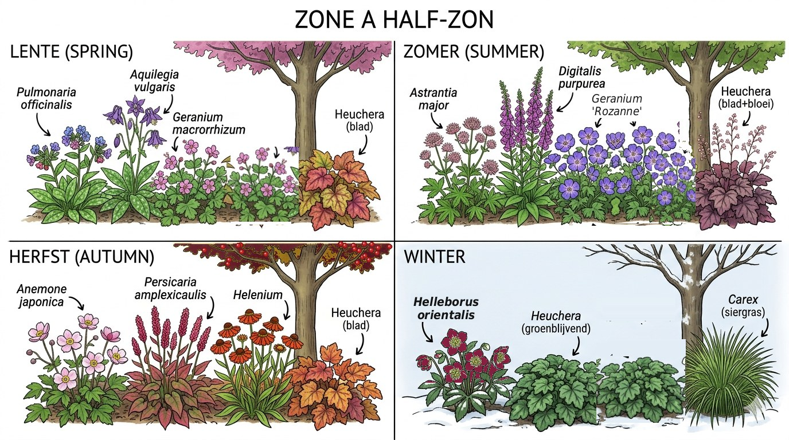
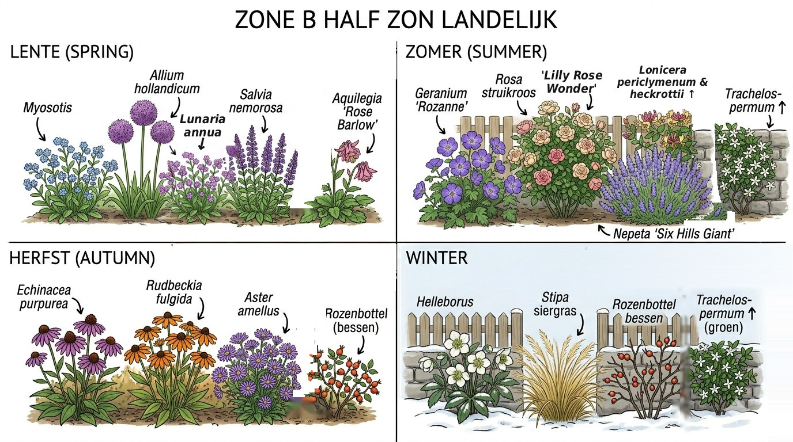
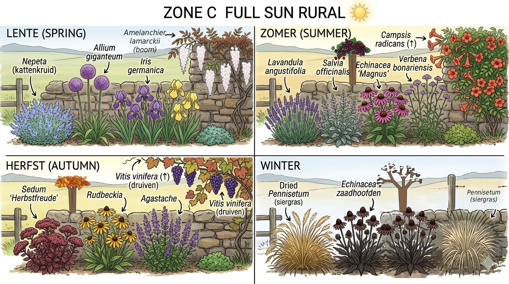
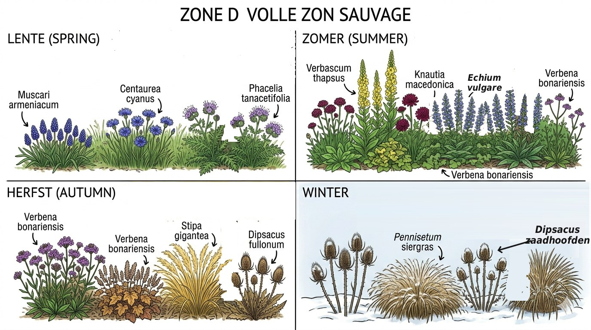
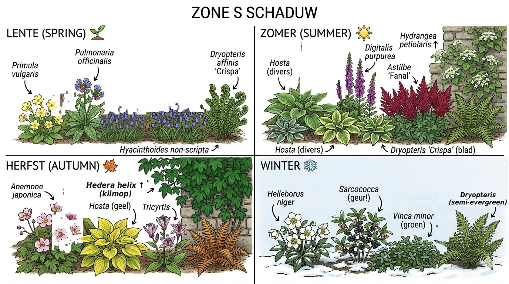

Vijf zones · Drie thema's · Vier seizoenen · Vogels & Bijen
Warme nostalgische uitstraling. Klimrozen, lavendel, ridderspoor. Zones B en C.
Zachte borders met vaste planten. Textuur, structuur en sereniteit. Heuchera als kleuraccent. Zone A.
Wilde schoonheid, veel inheemse en wilde soorten, zaadhoofden. Paradijs voor bijen en vogels. Zones D en S.
Klik op een foto om die te vergroten.
🌸 in bloei · 🍃 mooi blad / structuur · 🫘 bessen / zaad / vrucht · 🌿 groenblijvend · ↑ klimplant · 🌳 boom
Illustraties van de beplanting per zone, in lente, zomer, herfst en winter. Klik op een afbeelding om te vergroten.




